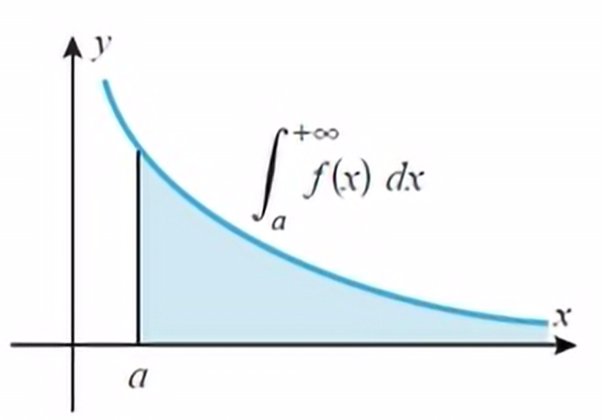
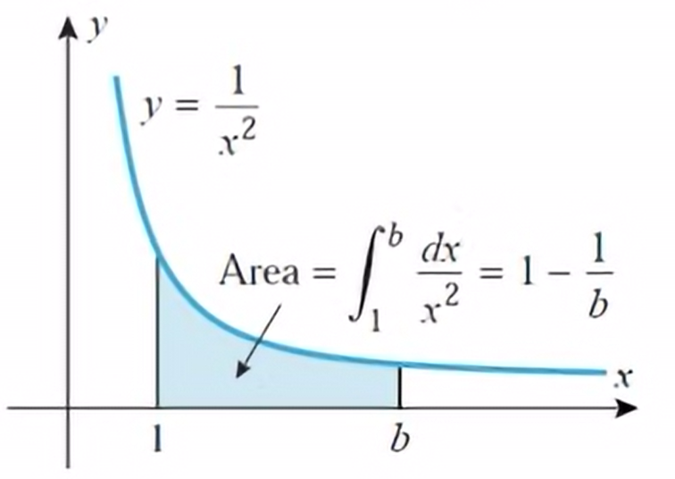
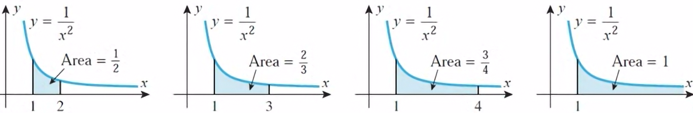
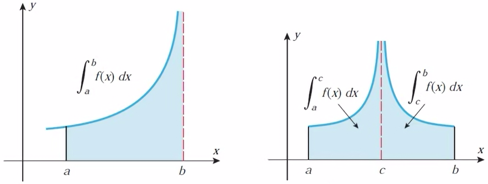

Until now, we have "assumed" that in the definition of our definite integral $$\int_a^bf(x)dx$$ that \([a,b]\) is a finite interval and that the limit that defines the integral exists.
On the other hand, improper integrals extend the concept of definite integrals to allow infinite intervals of integration and integrands with vertical asymptotes within the interval of integration.
$$\int_1^\infty\frac{1}{x^2}dx$$
$$\int_{-\infty}^0e^xdx$$
$$\int_{-\infty}^\infty\frac{1}{x^2+1}dx$$
$$\int_{-3}^3\frac{1}{x^2}dx$$
$$\int_1^2\frac{1}{x-1}dx$$
$$\int_0^\pi\tan(x)dx$$
$$\int_0^\infty\frac{1}{\sqrt{x}}dx$$
$$\int_{-\infty}^\infty\frac{1}{x^2-9}dx$$
$$\int_1^\infty\sec(x)dx$$
Let's begin with the case where \(f\) is continuous and nonnegative on \([a,\infty)\). With this we can think of \(\int_a^\infty f(x)dx\) as the area under the curve \(y=f(x)\) over the interval \([a,\infty)\):
At first, we might argue that this area is infinite because the region is infinite. However, this understanding is based on vague intuition rather than precise mathematical logic since this concept of area has only been defined over intervals of finite extent.
So, before we can make any reasonable statements, we need to define what we mean by the area of this region. To do this, we will focus on one illustrative example to help us see the general picture.
Suppose we are interested in the area \(A\) of the region that lies below the curve \(y=\frac{1}{x^2}\) and above the interval \([1,\infty)\).
Instead of trying to find the entire area at once, let's begin by calculating the portion of the area that lies above a finit interval \([1,b]\):
$$\begin{align}\int_1^b\frac{1}{x^2}dx &= -\frac{1}{x}\bigg{\vert}_1^b \\ &= -\frac{1}{b}+\frac{1}{1} \\ &= 1-\frac{1}{b}\end{align}$$
If we now allow \(b\) to increase so \(b\to\infty\), then the portion fo the area over the interval \([1,b]\) will begin to fill out the area over the entire interval.
Hence, we can reasonably define the area \(A\) under \(y=\frac{1}{x^2}\) over the interval \([1,\infty)\) to be
$$\begin{align}A &= \int_1^\infty\frac{1}{x^2}dx \\ &= \lim_{b\to\infty}\int_1^b\frac{1}{x^2}dx \\ &= \lim_{b\to\infty}(1-\frac{1}{b}) \\ &= 1\end{align}$$
The improper integral of \(f\) over the interval \([a,\infty)\) is defined to be $$\int_a^\infty f(x)dx=\lim_{b\to\infty}\int_a^bf(x)dx$$ In the case where the limit exists, the improper integral is said to converge, and the value of the intergal is defined to be the value of the limit. In the case where the limit does not exist, the improper integral is said to diverge, and it is not assigned a value.
The improper integral of \(f\) over the interval \((-\infty,b]\) is defined to be $$\int_{-\infty}^bf(x)dx=\lim_{a\to-\infty}\int_a^bf(x)dx$$ The integral is said to converge if the limit exists and diverge if it does not.
The improper integral of \(f\) over the interval \((-\infty,\infty)\) is defined to be $$\int_{-\infty}^\infty f(x)dx=\int_{-\infty}^cf(x)dx+\int_c^\infty f(x)dx$$ Where \(c\) is any real number. The integral is said to converge if both terms converge and diverge if either term diverges.
These integrals either have an infinite discontinuity either at one of the endpoints or at a point on the interior of the interval:
In both cases, we do something similar to what we did in our earlier case: re-write the integral using constants and apply limits.
If \(f\) is continuous on the interval \([a,b]\), except for an infinite discontinuity at \(b\), then the improper integral of \(f\) over the interval \([a,b]\) is defined to be $$\int_a^bf(x)dx=\lim_{k/to b^-}\int_a^kf(x)dx$$ In the case where the indicated limit exists, the improper integral is said to converge and the value of the integral is defined to be the value of the limit. In the case where the limit does not exist, the improper integral is said to diverge and it is not assigned a value.
If \(f\) is conitnuous on the interval \([a,b]\), except for an infinite discontinuity at \(a\), then the improper integral of \(f\) over the interval \([a,b]\) is defined to be $$\int_a^bf(x)dx=\lim_{k\to a^+}\int_k^bf(x)dx$$ The improper integral is said to converge if the limit exists, and to diverge if it does not.
If \(f\) is continuous on the interval \([a,b]\), except for an infinite discontinuity at a point \(c\) in \((a,b)\), then the improper integral of \(f\) over the interval \([a,b]\) is defined to be $$\int_a^bf(x)dx=\int_a^cf(x)dx+\int_c^bd(x)dx$$ Where the two integrals on the right side are themselves improper. The improper integral on the left side is said to converge if both terms on the right side converge and diverge if either term on the right side diverges.